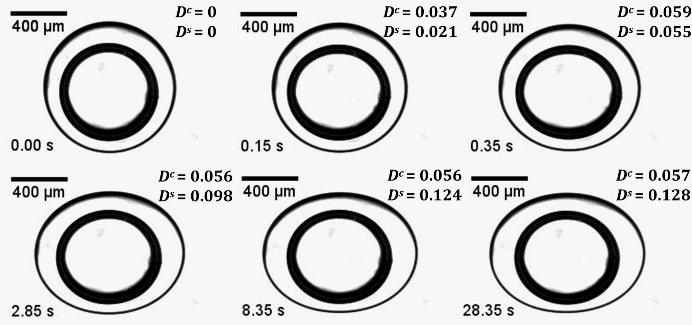
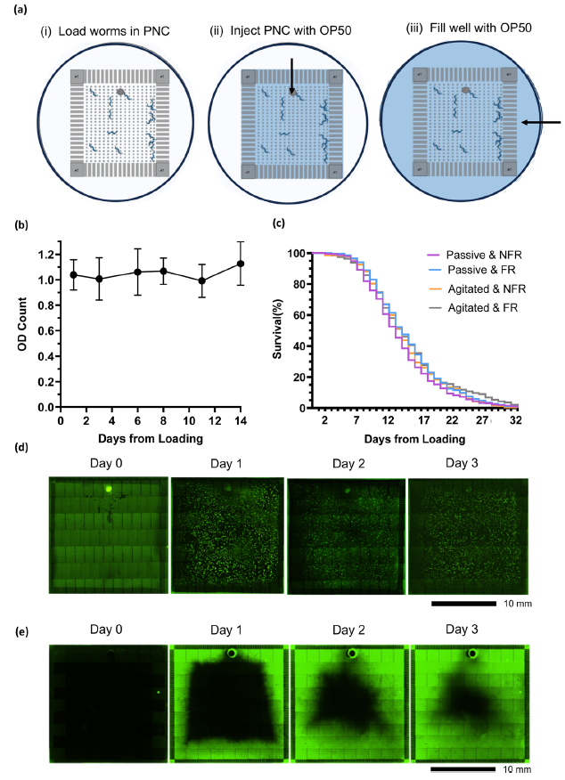
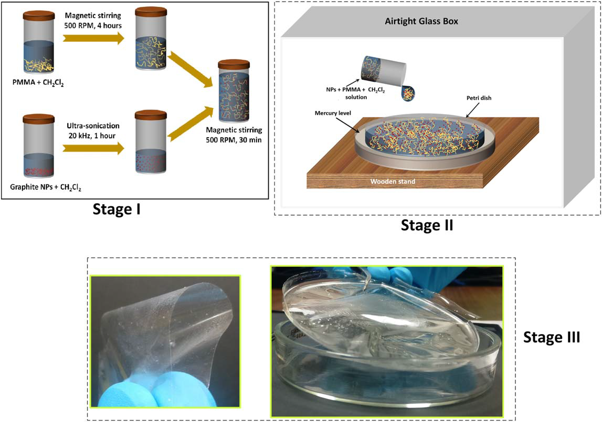

Research
Advancing engineering through interdisciplinary research in microfluidics, electrohydrodynamics, interfacial science, advanced materials, and biological systems.
Advancing Engineering Through Interdisciplinary Research
The SMILE Lab develops innovative engineering technologies to understand and control complex physical and biological systems. Our research integrates microfluidic engineering, electrohydrodynamics, interfacial science, and advanced materials to address challenges in environmental health, sustainable engineering, and fundamental fluid science. Through interdisciplinary collaboration and hands-on undergraduate research, we create technologies that advance scientific discovery while preparing the next generation of engineers.

Electrohydrodynamics and Interfacial Engineering of Complex Fluids
Understanding how electric fields interact with droplets and complex fluid interfaces is essential for advancing technologies ranging from microfluidics and biomedical devices to food processing, energy systems, and advanced manufacturing. At the SMILE Lab, we investigate the electrohydrodynamics of emulsions and multiphase fluid systems, with particular emphasis on the role of surfactants and proteins in governing droplet deformation, interfacial transport, coalescence, and stability under applied electric fields.
Through a combination of experimental investigation, theoretical analysis, and fundamental fluid mechanics, our research seeks to develop predictive engineering frameworks that enable precise control of complex fluid systems and inspire next-generation technologies for biomedical, industrial, and environmental applications.
Selected Publications

Microfluidic Technologies for Environmental Toxicology and Transgenerational Health
Environmental contaminants, including heavy metals, endocrine-disrupting chemicals, pharmaceuticals, and emerging pollutants, pose significant risks to ecosystem and human health through their potential to alter organismal physiology, accelerate functional decline, and influence healthy aging. While conventional toxicological assessments primarily evaluate acute toxicity and immediate physiological responses, the long-term biological consequences of chronic, low-dose exposures—including the extent to which environmentally relevant exposures influence health and functional outcomes across subsequent generations—remain largely unexplored.
At the SMILE Lab, we develop innovative microfluidic technologies that enable high-throughput, quantitative assessment of environmental toxicants. These platforms integrate with the model organism Caenorhabditis elegans to provide scalable, high-throughput experimental systems for quantitative characterization of dose-dependent biological responses and identification of environmentally relevant, sublethal exposure concentrations that do not produce overt toxicity in the directly exposed generation.
Building upon this foundation, our current research investigates whether environmentally relevant, sublethal toxicant exposures induce physiological and functional alterations that persist across subsequent generations. By integrating microfluidic engineering, quantitative phenotyping, and longitudinal biological analyses, we seek to establish experimental frameworks for understanding how ancestral environmental exposures influence organismal health, aging trajectories, and transgenerational resilience.
Selected Publications

Flexible Polymer Nanocomposite Thin Films
Functional polymer nanocomposite thin films provide a versatile platform for engineering lightweight, flexible materials with enhanced optical, mechanical, thermal, and structural properties. By incorporating nanoscale fillers into polymer matrices, these materials can be tailored to achieve multifunctional performance for a broad range of engineering applications.
At the SMILE Lab, this research focuses on the design, fabrication, and characterization of flexible polymer nanocomposite thin films through the controlled incorporation of functional nanomaterials into polymer matrices. Our work investigates the relationships between material composition, nanoparticle dispersion, processing techniques, and thin-film properties to better understand how nanoscale engineering influences macroscopic material performance. These studies contribute to the development of next-generation functional materials for optical coatings, flexible electronics, sensing technologies, and advanced engineering applications.
Selected Publications
Looking Ahead
As the SMILE Lab continues to grow, our research will expand through interdisciplinary collaborations that integrate microfluidic engineering, interfacial science, electrohydrodynamics, advanced materials, and biological systems. We are committed to developing innovative engineering technologies that address emerging challenges in environmental health, sustainable materials, and complex fluid systems while providing meaningful undergraduate research experiences. By combining fundamental engineering principles with real-world applications, we aim to advance scientific discovery and train the next generation of engineers and innovators.